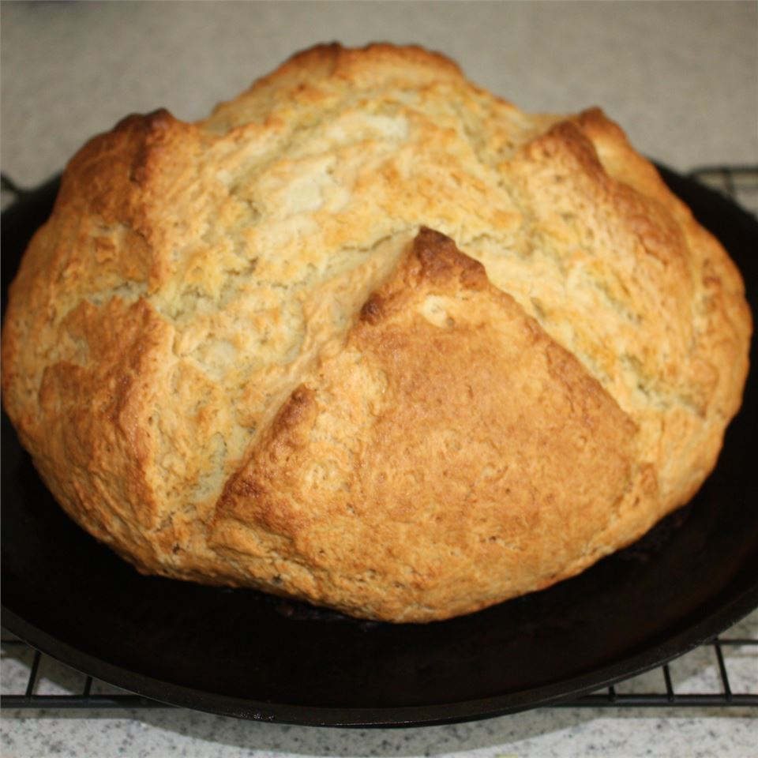

Irish Soda Bread

Description
A good old fashioned soda bread with just the basic ingredients. Buttermilk gives this crusty loaf a good flavor. The best Irish soda bread around!
Ingredients
- 4 cups all-purpose flour
- 4 tablespoons white sugar
- 1 teaspoon baking soda
- 1 tablespoon baking powder
- 1/2 teaspoon salt
- 1/2 cup margarine, softened
- 1 cup buttermilk
- 1 egg
- 1/4 cup butter, melted
- 1/4 cup buttermilk
Steps
- Preheat oven to 375 degrees F (190 degrees C). Lightly grease a large baking sheet.
- In a large bowl, mix together flour, sugar, baking soda, baking powder, salt and margarine. Stir in 1 cup of buttermilk and egg. Turn dough out onto a lightly floured surface and knead slightly. Form dough into a round and place on prepared baking sheet. In a small bowl, combine melted butter with 1/4 cup buttermilk; brush loaf with this mixture. Use a sharp knife to cut an 'X' into the top of the loaf.
- Bake in preheated oven until a toothpick inserted into the center of the loaf comes out clean, 45 to 50 minutes. Check for doneness after 30 minutes. You may continue to brush the loaf with the butter mixture while it bakes.